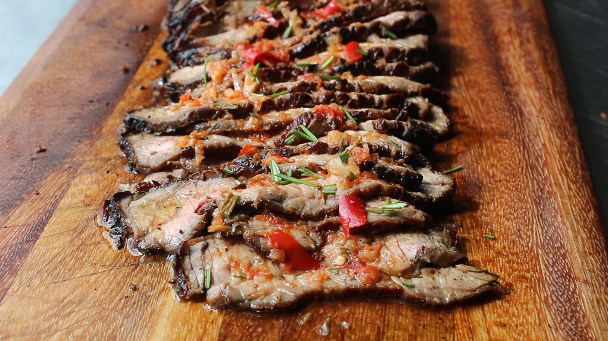

Barbarian Beef

If you've ever wanted to channel your inner barbarian and cook a large hunk of meat right on the coals then this the recipe for you.
Ingredients
- 1 (2 1/2 pound) boneless top round steak, or to taste
- salt to taste
- 100% natural hardwood lump charcoal
For the sauce
- 4 cloves garlic
- 1 Fresno chile pepper
- 2 teaspoons rosemary leaves
- 1 teaspoon kosher salt
- 2 tablespoons red wine vinegar
- 2 tablespoons olive oil
Directions
- Season both sides of beef generously with salt. Let sit at room temperature, flipping halfway through, for 30 minutes.
- Burn a bed of charcoal until coals are glowing red and ashy white on the surface, rearranging coals as needed.
- Place the beef right on top of the coals. Cook, flipping over halfway, about 4 minutes per side. Continue cooking until the internal temperature of the meat reaches 120 degrees F (49 degrees C) for medium-rare, 1 to 2 minutes more per side. Transfer beef to a plate. Let rest while making the sauce.
- Place garlic, chile pepper, rosemary, and kosher salt in a mortar. Crush into a paste using a pestle. Stir in vinegar and oil.
- Slice beef thinly and spoon the sauce on top.
<